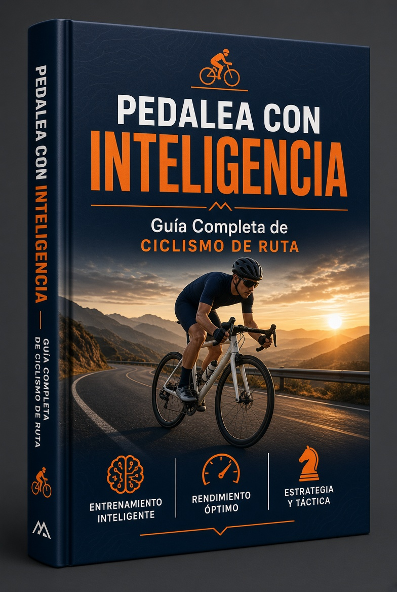
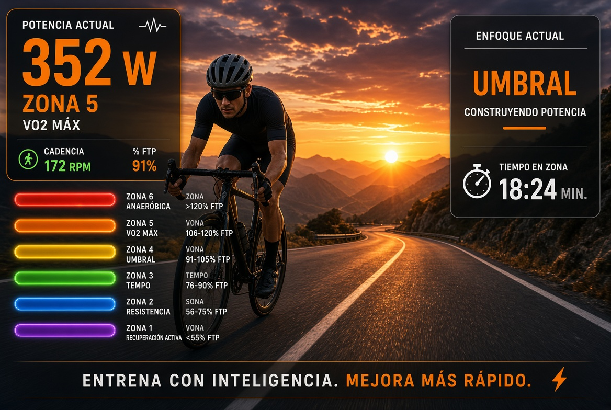
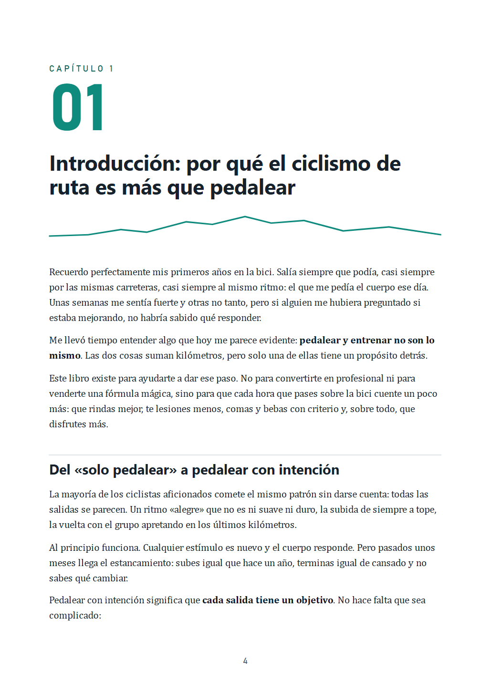
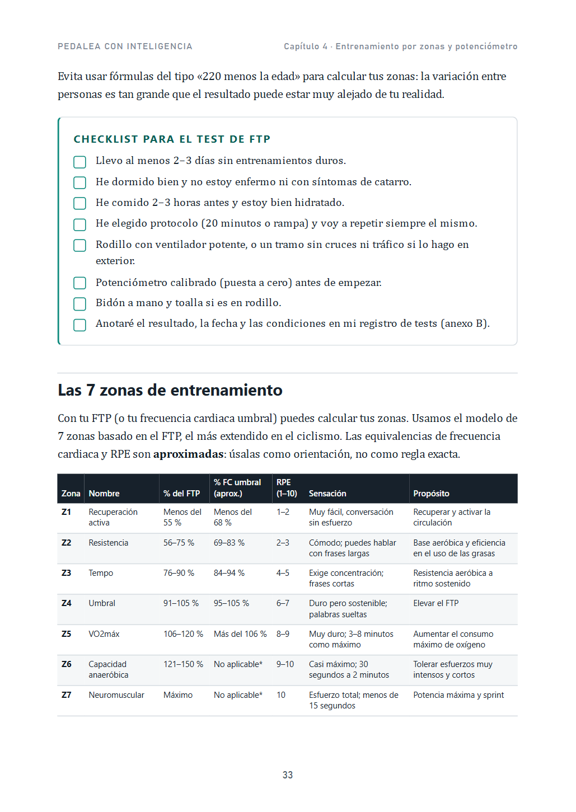
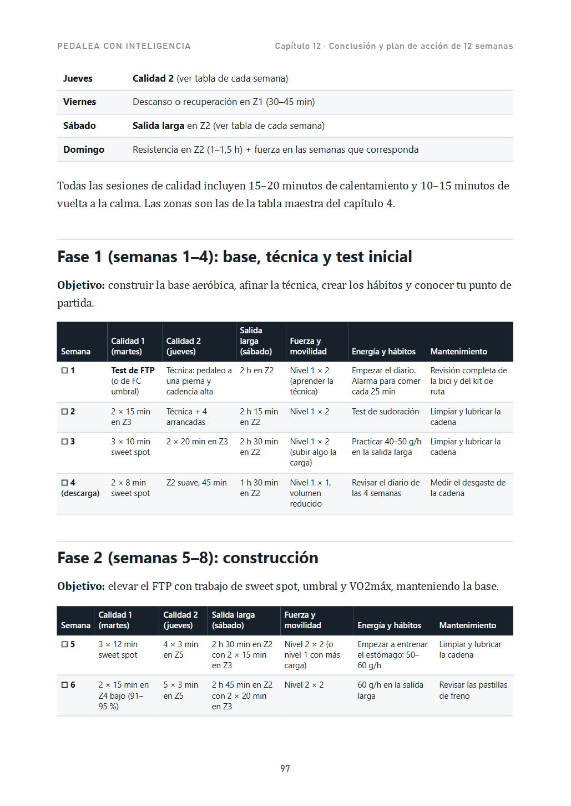
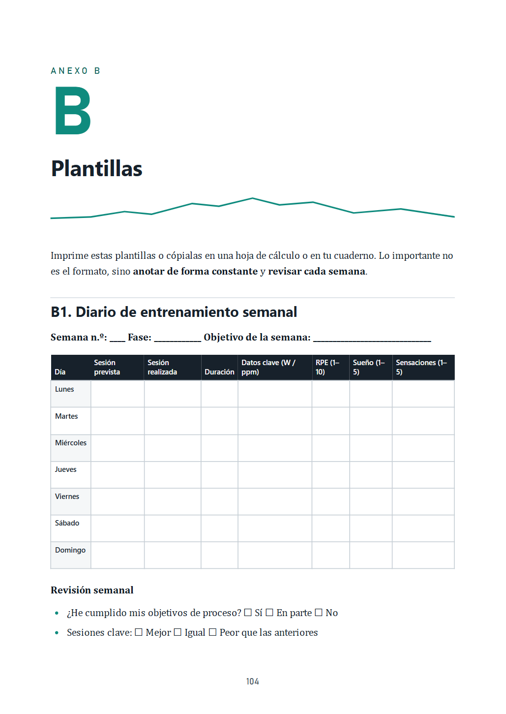

Ruedas desde hace menos de un año
Quieres hacerlo bien desde el principio: una bici ajustada, buena técnica, hábitos sólidos y saber qué hacer en cada salida.
Empieza por: posición, técnica y plan principiante
La guía práctica para ciclistas principiantes e intermedios que quieren mejorar su rendimiento, evitar el estancamiento y las lesiones, y disfrutar más de cada salida. Sin promesas milagrosas: técnica, zonas, planes, nutrición y un plan de 12 semanas listo para seguir.

No necesitas ser competidor ni tener material caro. Necesitas ganas de entender lo que haces sobre la bici. El libro te indica por dónde empezar según tu punto de partida.
Quieres hacerlo bien desde el principio: una bici ajustada, buena técnica, hábitos sólidos y saber qué hacer en cada salida.
Empieza por: posición, técnica y plan principiante
Haces kilómetros, pero todas las salidas se parecen. Quieres ordenar el entrenamiento por zonas y saber comer y beber en ruta.
Empieza por: zonas, plan intermedio y energía
Subes igual que hace un año, o tienes una marcha marcada en el calendario y quieres llegar preparado y sin sustos.
Empieza por: reparto de la intensidad y plan de 12 semanas
La mayoría de los aficionados se estanca por los mismos motivos. Ninguno se arregla con una bici más cara.
Todas las salidas al mismo ritmo. Demasiado duro para recuperar y demasiado suave para mejorar: la famosa «zona gris».
Pájaras en las salidas largas. Empezar a comer cuando ya tienes hambre es empezar tarde.
Molestias que «ya se pasarán». Rodillas, espalda o manos que avisan de un sillín mal ajustado o de una carga mal dosificada.
En el capítulo 4 aprendes a calcular tus zonas y a repartir la intensidad para que los días suaves te recuperen y los días duros te hagan mejorar.
Cada capítulo termina con un resumen clave y una acción concreta para esa misma semana. Lees, aplicas y notas la diferencia.
Ajuste de la bici, cadencia, cambio, subidas, descensos y rodar en grupo.
Capítulos 2 y 3FTP, 7 zonas y planes para principiante, intermedio y avanzado.
Capítulos 4 y 5Qué comer y beber antes, durante y después, y tu plan de avituallamiento.
Capítulos 6 y 7Molestias más comunes, su causa probable, y rutinas de fuerza y movilidad.
Capítulos 8 y 9Constancia, gestión del sufrimiento y estrategia en marchas.
Capítulo 10
Cada salida con un propósito. En el capítulo 4 calculas tu FTP, defines tus 7 zonas y aprendes a usarlas con potenciómetro, con pulsómetro o solo con sensaciones.
Ver todo el contenidoPárrafos cortos, tablas claras y recuadros de acción. Pulsa sobre una página para verla en grande.




No es solo un calendario de entrenamientos. Cada semana incluye las sesiones en bici, la fuerza, un hábito de nutrición o hidratación y una tarea de mantenimiento. Escrito para nivel intermedio, con adaptaciones para principiante y avanzado.
Pago seguro · Recibes el PDF al momento en tu correo
Si el libro no es lo que esperabas, pide el reembolso dentro de los 7 días siguientes a la compra y te devolvemos el dinero.
¿Te queda alguna duda? Escríbeme a [tu correo de contacto].
No. El libro explica cómo entrenar con potencia, con pulsómetro o solo con el esfuerzo percibido. Todas las zonas incluyen equivalencias aproximadas en pulso y sensación.
Sí. Está pensado para principiantes e intermedios. Hay una ruta de lectura para cada nivel y un plan específico para quien entrena entre 4 y 6 horas por semana.
Los planes empiezan en 4 horas semanales. El plan de 12 semanas está escrito para 6–8 horas e incluye cómo adaptarlo si tienes menos o más tiempo.
En PDF, con índice navegable. Se lee bien en móvil, tablet y ordenador, y las plantillas están preparadas para imprimir.
Sí. El plan de 12 semanas termina con una fase específica y una puesta a punto, y los capítulos 7 y 10 te ayudan a preparar el avituallamiento y la estrategia del día.
No. Es una guía formativa con pautas orientativas basadas en recomendaciones habituales. Si tienes alguna lesión, enfermedad o dudas sobre tu salud, consulta con un profesional antes de aumentar tu carga de entrenamiento.
Dentro de 12 semanas puedes estar rodando igual que hoy o con un plan, tus zonas, tu avituallamiento y menos molestias. Tú eliges.
Quiero pedalear con inteligencia